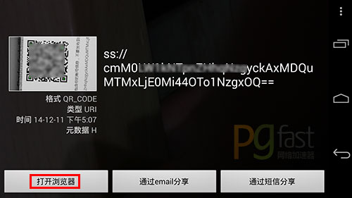
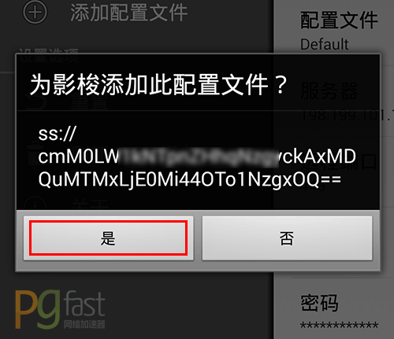

为了方便在移动设备上设置shadowsocks而不需要手动输入繁琐的ip地址以及端口密码等信息，你可以使用客服提供的二维码自动配置，下面以安卓设备为例子说明怎么使用二维码功能自动配置。
1、在安卓设备上安装好shadowsocks客户端 shadowsocks-nightly-2.6.8.apk
2、确保你安卓设备上有二维码扫描软件，例如 barcode_scanner.apk
3、通过客服获取二维码
4、然后用你手机上的二维码扫描软件扫描这个二维码，然后选择用浏览器打开，如下图：
注意：请不要使用微信等软件内置的二维码扫描工具扫描，会失效。

5、使用浏览器打开之后会自动弹出添加到shadowsocks配置的窗口，点“是”即可添加好，如下图：

至此就完成了，可以重复以上步骤把所有的服务器都一次配置好，之后再用的时候就只需要选择服务器连接即可。